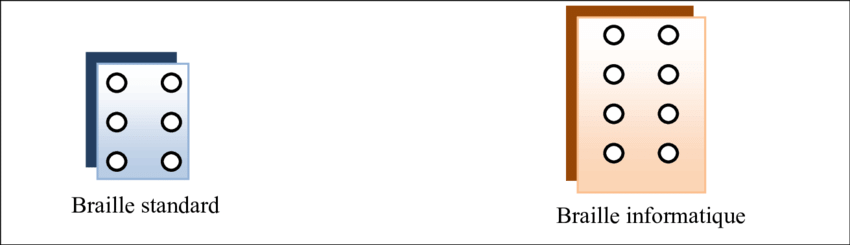

Qu'est ce que c'est?
La plage braille est utilisée par les aveugles et malvoyants pour leur permettre de naviguer sur internet. C’est un dispositif électromécanique constitué de picots plastiques (12 à 80 selon les modèles) qui montent et qui descendent en fonction de ce qui est écrit sur l’écran et qui permet à un aveugle de lire en braille.


Le braille informatique
La plage braille utilise le braille informatique (aussi appelé TBFR 2007=Table Braille Française, année 2007) à 8 points car il est plus adapté pour le langage en informatique contrairement au braille standard à 6 points. La plage informatique permet ainsi 256 =2^8 combinaisons possibles ce qui correspond au nombre de caractère de la table ASCII tandis que le braille classique permet 2^6=64 combinaisons. Le braille informatique permet ainsi le codage des lettres en majuscule, des caractères spéciaux, des lettres étrangères….
Son fonctionnement
La plage braille s’utilise grâce à une connection par Bluetooth/USB/Port série sur un ordinateur, une tablette ou un téléphone. Ce dispositif nécessite néanmoins un logiciel pour fonctionner et peut être couplé avec un logiciel de synthèse vocale. Les personnes malvoyantes ou aveugles l’utilisent pour naviguer sur les pages internets grâce à des touches spécifiques. Ils peuvent ainsi lire ligne par ligne ce qui est écrit sur l’écran. Néanmoins, ce produit est cher est n’est pas accessible par toutes les personnes, il coûte en effet 5 000 à 10 000€. Il existe également des “versions miniaturisées” des plages brailles qui s’appellent des blocs notes braille. Ils peuvent être emmenés partout car ils sont légers et peu encombrants. Ils permettent de noter ce que l’on veut à tout moment en utilisant également le braille informatique et contient également quelques fonctionnalités de traitements de texte comme mettre en gras, souligner, modifier la taille de police… Il contient un clavier braille de type Perkins ou AZERTY.